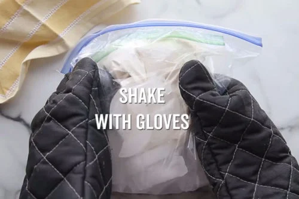

Ice Cream in a Bag
This fun and easy activity lets kids make their own ice cream using simple ingredients and a little bit of science!
How to Make Ice Cream in a Bag
This is a great way to teach kids about the science behind ice cream making, and the best part is they get to enjoy a tasty treat at the end!
Ingredients
Instructions
- Add milk, sugar, and vanilla to a small Ziploc bag.
- Seal the bag tightly, making sure there's no air inside.
- Fill a larger Ziploc bag with ice and add salt.
- Place the small bag inside the larger bag and seal.
- Shake the bags for 5-10 minutes until the mixture turns into ice cream. 
-
Remove the small bag, rinse off the salt, and enjoy your ice cream!

Tips and Ideas
- Try using different flavors like chocolate syrup or fruit.
- Let kids choose their own toppings to make it even more fun.